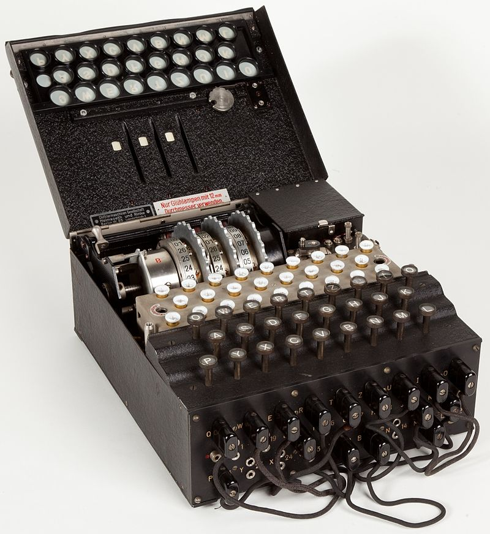

Relevance to today
In respect for Alan Turing, on his birthday on 23 June 2021, the UK honoured the work of Alan by featuring his image on the design of the latest £50 note. Each of his theories or inventions played a crucial role in laying the foundation for successive generations of researchers to build upon, refine, and enhance his ideas.
Turing was an avid promoter of using statistics and mathematics to address problems in the real world. He was able to demonstrate the utility of gathering information and the significance of statistics for making defensible decisions in Bletchley Park and beyond. The way governments throughout the world have used data to combat the coronavirus epidemic has been greatly influenced by this method of thinking, which involves calculating probabilities and utilising logical reasoning to make judgements.
In the modern world, Alan Turing's contributions are still incredibly important. The digital age was made possible by his significant contributions to the foundations of computer science, especially the creation of the Turing machine and his innovative concepts in artificial intelligence. His theoretical work developed principles that have moulded not only the architecture of contemporary computers but also our understanding of computation and problem-solving techniques. Turing's groundbreaking work on deciphering the Enigma code during World War II and his observations on the theoretical bounds of computation demonstrate the usefulness of his theories.
